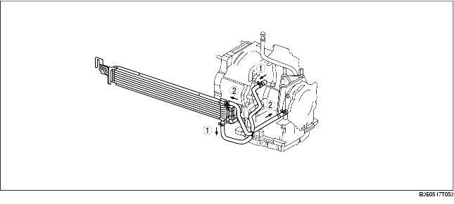
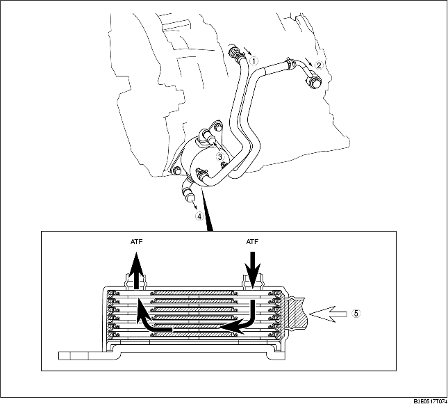

Z6
• An air-cooling type AT oil cooler has been adopted. The oil cooler cools the ATF heated in the ATX body.

.
LF
1. A water-cooled AT oil cooler installed to the converter housing has been adopted.
2. The oil cooler functions as follows:
3. Since this oil cooler uses coolant from the heater, cold ATF is warmed rapidly causing the ATF viscosity to reduce rapidly. Reduction of friction within the AT results in improved fuel efficiency.

.